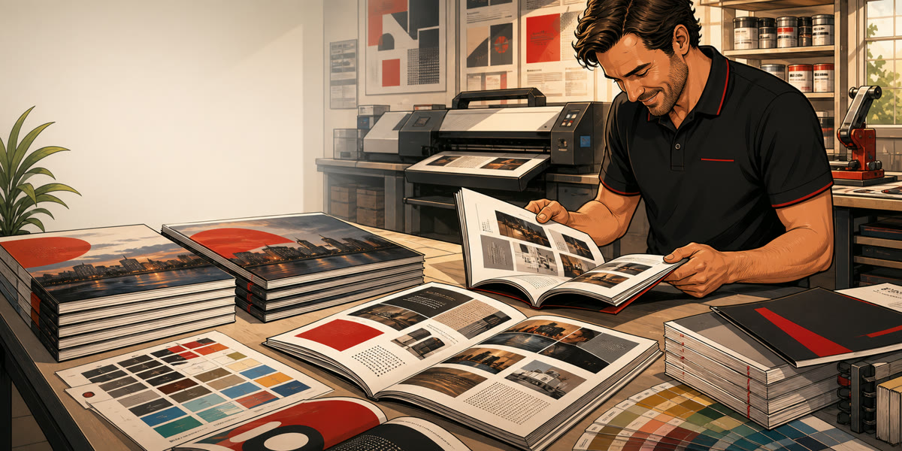

Catálogos
Material comercial para productos, servicios y campañas.

Impresión de catálogos Mallorca
Catálogos, revistas y documentos multipágina para empresas y comercios. Enfoque local: presupuesto personalizado, revisión de archivo y recogida en Palma.
Material comercial para productos, servicios y campañas.
Revisión de papel, páginas, grapado y preparación de archivos.
La venta no se plantea como compra online, sino como presupuesto técnico.
Documentos multipágina
La impresión de catálogos requiere revisar más elementos que una pieza simple: número de páginas, formato cerrado y abierto, tipo de papel, portada, encuadernación, orden de páginas, sangrados y calidad de imágenes. En Imprenta Disgraf trabajamos catálogos, revistas, dossiers y documentos multipágina para empresas y comercios de Mallorca.
Un catálogo puede servir para presentar productos, explicar servicios, acompañar una acción comercial o reforzar la imagen de marca en ferias y reuniones. Antes de imprimir revisamos el archivo para detectar posibles problemas de lectura, márgenes, resolución o paginación.
No lo tratamos como un producto de cesta online porque cada catálogo puede tener combinaciones muy distintas. El presupuesto se prepara según cantidad, páginas, tamaño, papel, acabado y plazo.
Dudas frecuentes
Sí. Revisamos paginación, márgenes, sangrado, resolución y preparación general del documento.
Cantidad, número de páginas, tamaño, tipo de papel, acabado, encuadernación y plazo de producción.
Depende del formato y acabado. Lo mejor es indicar cantidad aproximada para valorar la opción más adecuada.